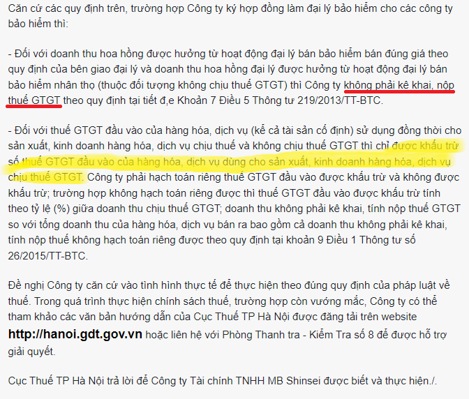

Hoa hồng đại lý bảo hiểm có tính thuế GTGT không? Khi nhận doanh thu hoa hồng đại lý bảo hiểm có xuất hóa đơn GTGT không? Có phải kê khai tính thuế GTGT không? Kế toán Diệu Tâm xin giải đáp các vướng mắc đó của các bạn.
|
Theo Điều 9 của Nghị định 181/2025/NĐ-CP quy định về Luật thuế GTGT
Điều 9. Giá tính thuế đối với hoạt động đại lý, môi giới mua bán hàng hóa, dịch vụ hưởng hoa hồng và hàng hóa, dịch vụ được sử dụng hóa đơn thanh toán ghi giá thanh toán 1. Đối với hoạt động đại lý, môi giới mua bán hàng hóa và dịch vụ hưởng hoa hồng là tiền hoa hồng thu được từ các hoạt động này chưa có thuế giá trị gia tăng, trừ trường hợp không phải tính thuế giá trị gia tăng gồm: a) Doanh thu hàng hóa, dịch vụ nhận bán đại lý và doanh thu hoa hồng được hưởng từ hoạt động đại lý bán đúng giá quy định của bên giao đại lý hưởng hoa hồng của dịch vụ: bưu chính, viễn thông, bán vé xổ số, vé máy bay, ô tô, tàu hỏa, tàu thủy; đại lý vận tải quốc tế; đại lý của các dịch vụ ngành hàng không, hàng hải mà được áp dụng thuế suất thuế giá trị gia tăng 0%; đại lý bán bảo hiểm. |
Theo công văn 56951/CTHN-TTHT ngày 4/8/2023 của Cục thuế Tp. Hà Nội
Kính gửi: Công ty TNHH Axinan Việt Nam
(Địa chỉ: Tầng 9, Tòa nhà Epic Tower, Ô đất D14 Khu đô thị mới Cầu Giấy, phường Mỹ Đình 2, quận Nam Từ Liêm, TP Hà Nội; MST: 0109652116) Trả lời công văn số 30/2023/CV-AXNVN đề ngày 10/7/2023 của Công Ty TNHH Axinan Việt Nam (sau đây gọi tắt là Công ty) hỏi về chính sách thuế, Cục Thuế TP Hà Nội có ý kiến như sau: - Căn cứ Thông tư số 219/2013/TT-BTC ngày 31/12/2013 của Bộ Tài chính hướng dẫn thi hành Luật Thuế giá trị gia tăng và Nghị định số 209/2013/NĐ-CP ngày 18 tháng 12 năm 2013 của Chính phủ quy định chi tiết và hướng dẫn thi hành một số điều Luật Thuế giá trị gia tăng: + Tại Khoản 7 Điều 5 quy định các trường hợp không phải kê khai, tính nộp thuế GTGT: “Điều 5. Các trường hợp không phải kê khai, tính nộp thuế GTGT ...7. Các trường hợp khác: Cơ sở kinh doanh không phải kê khai, nộp thuế trong các trường hợp sau: ...đ) Doanh thu hàng hóa, dịch vụ nhận bán đại lý và doanh thu hoa hồng được hưởng từ hoạt động đại lý bán đúng giá quy định của bên giao đại lý hưởng hoa hồng của dịch vụ: bưu chính, viễn thông, bán vé xổ số, vé máy bay, ô tô, tàu hỏa, tàu thủy; đại lý vận tải quốc tế; đại lý của các dịch vụ ngành hàng không, hàng hải mà được áp dụng thuế suất thuế GTGT 0%; đại lý bán bảo hiểm.” + Tại Khoản 11 Điều 14 Thông tư số 219/2013/TT-BTC ngày 31/12/2013 của Bộ Tài chính quy định về nguyên tắc khấu trừ thuế giá trị gia tăng đầu vào: “11. Thuế GTGT đầu vào của hàng hóa, dịch vụ sử dụng cho các hoạt động cung cấp hàng hóa, dịch vụ không kê khai, tính nộp thuế GTGT hướng dẫn tại Điều 5 Thông tư này (trừ khoản 2, khoản 3 Điều 5) được khấu trừ toàn bộ.” - Căn cứ Điểm a Khoản 9 Điều 1 Thông tư số 26/2015/TT-BTC ngày 27/02/2015 của Bộ Tài chính quy định sửa đổi khoản 2 Điều 14 Thông tư số 219/2013/TT-BTC ngày 31/12/2013 của Bộ Tài chính như sau: “9. Sửa đổi, bổ sung Điều 14 như sau: a) Sửa đổi khoản 2 Điều 14 như sau: “2. Thuế GTGT đầu vào của hàng hóa, dịch vụ (kể cả tài sản cố định) sử dụng đồng thời cho sản xuất, kinh doanh hàng hóa, dịch vụ chịu thuế và không chịu thuế GTGT thì chỉ được khấu trừ số thuế GTGT đầu vào của hàng hóa, dịch vụ dùng cho sản xuất, kinh doanh hàng hóa, dịch vụ chịu thuế GTGT. Cơ sở kinh doanh phải hạch toán riêng thuế GTGT đầu vào được khấu trừ và không được khấu trừ; trường hợp không hạch toán riêng được thì thuế đầu vào được khấu trừ tính theo tỷ lệ (%) giữa doanh thu chịu thuế GTGT, doanh thu không phải kê khai, tính nộp thuế GTGT so với tổng doanh thu của hàng hóa, dịch vụ bán ra bao gồm cả doanh thu không phải kê khai, tính nộp thuế không hạch toán riêng được. …” - Căn cứ Điều 15 Thông tư số 219/2013/TT-BTC ngày 31/12/2013 của Bộ Tài chính nêu trên (được sửa đổi, bổ sung theo quy định tại khoản 10 Điều 1 Thông tư số 26/2015/TT-BTC, Điều 1 Thông tư số 173/2016/TT-BTC), quy định về điều kiện khấu trừ thuế giá trị gia tăng đầu vào. - Căn cứ Điểm 17 Phụ lục thành phần chứa dữ liệu nghiệp vụ hóa đơn điện tử và phương thức truyền nhận với cơ quan thuế kèm theo Quyết định số 1510/QĐ-TCT ngày 21/9/2022 của Tổng cục trưởng Tổng cục Thuế, quy định: “17. Sửa đổi bổ sung Phụ lục V Quy định tại Quyết định số 1450/QĐ-TCT ngày 07/10/2021.
- Căn cứ Tờ khai thuế giá trị gia tăng (áp dụng đối với người nộp thuế tính thuế theo phương pháp khấu trừ có hoạt động sản xuất kinh doanh) mẫu số 01/GTGT ban hành kèm theo Thông tư số 80/2021/TT-BTC ngày 29/9/2021 của Bộ Tài chính. Căn cứ các quy định trên, Cục Thuế TP Hà Nội hướng dẫn như sau: 1) Doanh thu hoa hồng được hưởng từ hoạt động đại lý bán bảo hiểm đúng giá theo quy định của bên giao đại lý thuộc trường hợp không phải kê khai, tính nộp thuế GTGT theo quy định tại Khoản 7 Điều 5 Thông tư số 219/2013/TT-BTC. 2) Thuế GTGT đầu vào của hàng hóa, dịch vụ sử dụng cho hoạt động thuộc trường hợp không phải kê khai, tính nộp thuế GTGT nêu trên được khấu trừ toàn bộ nếu đáp ứng điều kiện khấu trừ thuế giá trị gia tăng đầu vào tại Điều 15 Thông tư số 219/2013/TT-BTC ngày 31/12/2013 của Bộ Tài chính (được sửa đổi, bổ sung theo quy định tại khoản 10 Điều 1 Thông tư số 26/2015/TT-BTC, Điều 1 Thông tư số 173/2016/TT-BTC). Trường hợp doanh nghiệp phát sinh thuế GTGT đầu vào của hàng hóa, dịch vụ (kể cả tài sản cố định) sử dụng đồng thời cho sản xuất, kinh doanh hàng hóa, dịch vụ chịu thuế GTGT và không chịu thuế GTGT thì số thuế GTGT được khấu trừ xác định theo hướng dẫn tại Điểm a Khoản 9 Điều 1 Thông tư số 26/2015/TT-BTC nêu trên. 3) Khi lập hóa đơn GTGT đối với doanh thu hoa hồng được hưởng nêu trên, tại dòng thuế suất thuế giá trị gia tăng trên hóa đơn ghi “KKKNT” theo hướng dẫn tại Quyết định số 1510/QĐ-TCT ngày 21/9/2022 của Tổng cục Thuế. 4) Khi lập tờ khai thuế GTGT mẫu số 01/GTGT ban hành kèm theo Thông tư số 80/2021/TT-BTC ngày 29/9/2021 của Bộ Tài chính, doanh nghiệp kê khai doanh thu hoa hồng được hưởng nêu trên vào chỉ tiêu [32a] trên tờ khai thuế GTGT. Đề nghị đơn vị nghiên cứu các quy định pháp luật thuế và căn cứ thực tế phát sinh tại đơn vị để thực hiện đúng quy định. Trong quá trình thực hiện chính sách thuế, trường hợp còn vướng mắc, đơn vị có thể tham khảo các văn bản hướng dẫn của Cục Thuế TP Hà Nội được đăng tải trên website http://hanoi.gdt.gov.vn hoặc liên hệ với Phòng Thanh tra - Kiểm Tra số 1 để được hỗ trợ giải quyết. Cục thuế TP Hà Nội trả lời để Công ty TNHH Axinan Việt Nam biết và thực hiện./.
|
Công văn số 10286/CTHN-TTHT của Cục thuế Tp. Hà Nội ngày 25/3/2022 V/v chính sách thuế GTGT đối với hoa hồng đại lý bảo hiểm

----------------------------------------------------------
|
Kết luận: Khi đại lý bảo hiểm nhận khoản tiền hoa hồng thì phải lập hóa đơn GTGT. + Trên hóa đơn ghi rõ số tiền môi giới, sổ tiền hoa hồng nhận được, dòng thuế suất thuế GTGT ghi KKKNT. + Nhưng không cần phải kê khai, nộp thuế GTGT đối với khoản doanh thu này. |
Nếu các bạn là nhà cung cấp có xuất hàng cho các đại lý bán đúng giá thì có thể xem thêm: Cách viết hóa đơn hàng gửi đại lý bán đúng giá